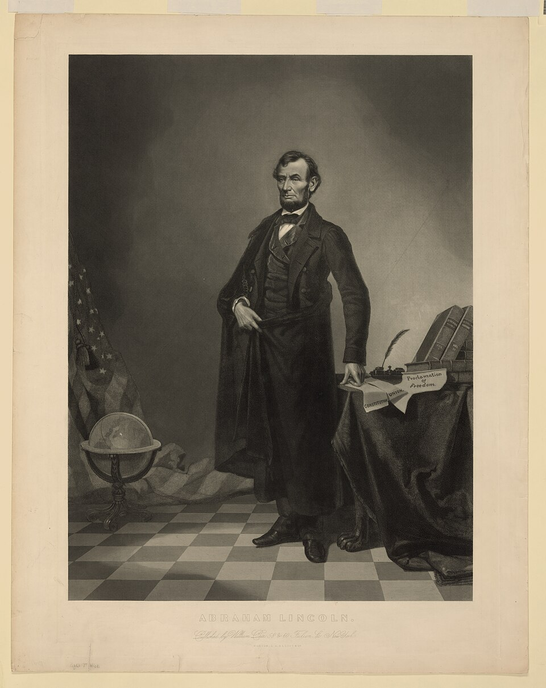

Good morning!
Nur das Schöne wird die Welt retten!
Fjodor Dostojewski
Nicht verzagen, Doc Alvers fragen!
Informatik — Grundkurs 11
Gezielt suchen, Quellen prüfen, sauber belegen
Nicht verzagen, Doc Alvers fragen!
Kapitel 01
Frage, Suchbegriffe, Operatoren
Nicht verzagen, Doc Alvers fragen!
Letzte Woche: der Kreislauf des Informationsmanagements — Bedarf klären, beschaffen, aufbereiten, nutzen, bewerten
Heute geht es um den zweiten Schritt: beschaffen — die Recherche
Suchen kann jeder. Gut suchen heißt: schnell finden, was stimmt
Leitfrage: Wie finde ich zu meiner Frage Quellen, denen ich trauen kann?
Nicht verzagen, Doc Alvers fragen!
Eine gute Recherche beginnt nicht mit der Suchmaschine, sondern mit einer möglichst genauen Frage
Die Frage entscheidet, was überhaupt ein Treffer ist
Zu ungenau: „Rechenzentren“ — genauer: „Wie viel Strom verbrauchen Rechenzentren in Deutschland?“
Aus der Frage die Suchbegriffe ableiten: Fachwörter, Synonyme, auch englische Begriffe
Zwei Minuten Nachdenken sparen eine Stunde Suchen
Nicht verzagen, Doc Alvers fragen!
| Eingabe | Wirkung | Beispiel |
|---|---|---|
| "Wortfolge" | sucht die Wörter genau in dieser Reihenfolge | "digitale Souveränität" |
| site: | sucht nur auf einer Website oder Domain | site:bildung.sachsen.de Lehrplan |
| -Wort | schließt ein Wort aus | Jaguar -Auto |
| OR | findet Seiten mit dem einen oder dem anderen Wort | Rechenzentrum OR Datacenter |
| filetype: | sucht nur Dateien eines Typs | Stromverbrauch filetype:pdf |
Anführungszeichen und site: schneiden den Beifang am stärksten zusammen
Nicht verzagen, Doc Alvers fragen!
Suchmaschinen und Netzwerke personalisieren: Sie zeigen bevorzugt, was zur bisherigen Nutzung passt
So entsteht eine Filterblase — widersprechende Sichtweisen erscheinen seltener
Gegenmittel: bewusst andere Quellen und Suchwege wählen
Bezahlte Treffer müssen als Anzeige gekennzeichnet sein — auch redaktionell aussehende Texte können Werbung sein
Leitfrage bei jedem Text: Wer verdient daran, dass ich das glaube?
Nicht verzagen, Doc Alvers fragen!
| Suchweg | Stärke | Schwäche |
|---|---|---|
| Suchmaschine | riesige Abdeckung, schnell | ungeprüft, sortiert nach Beliebtheit |
| Bibliothekskatalog | geprüfte Bücher und Zeitschriften | zeigt vor allem den Bestand der Bibliothek |
| Fachportal, Fachdatenbank | fachlich geprüft, meist zitierfähig | engere Abdeckung, oft nur mit Zugang |
Kataloge und Fachdatenbanken gehören zum Deep Web: Die Websuche erfasst sie nicht
Nicht verzagen, Doc Alvers fragen!
Deep Web: alles, was Suchmaschinen nicht erfassen — hinter Anmeldungen oder in Datenbanken
Dazu gehören Bibliothekskataloge, Fachdatenbanken, euer Schulportal
Das ist ganz legal — nur eben nicht über die Websuche erreichbar
Darknet: abgeschottete Netze wie Tor — dort finden sich auch illegale Angebote
Für die Schule heißt das: direkt im Katalog oder im Fachportal suchen
Nicht verzagen, Doc Alvers fragen!
Kapitel 02
Primär, sekundär, verantwortlich
Nicht verzagen, Doc Alvers fragen!
Primärquelle
die ursprüngliche Veröffentlichung
stammt von denen, die die Arbeit gemacht haben
Beispiele: die Studie selbst, der Gesetzestext
Sekundärquelle
berichtet über eine andere Quelle
erklärt und ordnet ein — kann aber verkürzen
Beispiele: Zeitungsartikel über die Studie, Lexikoneintrag, Erklärvideo
Nicht verzagen, Doc Alvers fragen!
Ein Wikipedia-Artikel ist eine Übersicht — nicht die Quelle, auf der die Aussage beruht
Deshalb taugt er nicht als alleinige Quelle für eine Facharbeit
Er ist aber ein guter Startpunkt: Fachbegriffe, Überblick, Zusammenhänge
Die Belege stehen unten in den Einzelnachweisen — dorthin führt der nächste Schritt
Bei wichtigen Aussagen gilt: zurück zur Primärquelle
Nicht verzagen, Doc Alvers fragen!
| Prüffrage | gutes Zeichen | Warnzeichen |
|---|---|---|
| Wer steht dahinter? | benannte, verantwortliche Person oder Einrichtung | kein Autor, kein Impressum |
| Womit belegt? | nachvollziehbare Belege, Weg zur Primärquelle | Behauptungen ohne Beleg |
| Wie aktuell? | Datum passt zur Frage | kein Datum, veraltete Zahlen |
| Mit welcher Absicht? | informieren, erklären | verkaufen, überreden |
Nichts über den Inhalt sagen: modernes Design, hoher Platz in der Trefferliste, viele Aufrufe
Nicht verzagen, Doc Alvers fragen!
Das Impressum ist die gesetzlich vorgeschriebene Angabe, wer für eine Seite verantwortlich ist
Es nennt Betreiber, Anschrift und Vertretungsberechtigte
Nicht verwechseln: Es ist weder Quellenliste noch Datenschutzerklärung
Fehlt es bei einem deutschen Angebot, ist das ein Warnzeichen
Erst das Impressum macht Verantwortung greifbar — wer etwas verantwortet, ist überprüfbar
Nicht verzagen, Doc Alvers fragen!
Kapitel 03
Unabhängig, aktuell, nachvollziehbar

Nicht verzagen, Doc Alvers fragen!
Abschreiben vervielfacht die Aussage — nicht den Beleg
Gehen alle drei auf dieselbe Ursprungsquelle zurück, folgt daraus: nichts
Erst unabhängige Quellen erhöhen die Sicherheit
Steht eine Behauptung nur auf einer Seite: zurückstellen und nach unabhängigen Belegen suchen
Eine einzelne Fundstelle ist weder Beweis noch Widerlegung
Nicht verzagen, Doc Alvers fragen!
Bilder werden oft aus dem Zusammenhang gerissen — aus einem anderen Jahr, einem anderen Land
Schnellster Test: die Rückwärtssuche nach dem Bild findet frühere Verwendungen
Das Erscheinungsdatum entscheidet, ob die Angaben aktuell genug für die Frage sind
Bei Marktzahlen zählt Aktualität, bei Definitionen weniger
Eine alte Quelle kann die bessere sein — wenn sie das Original ist
Nicht verzagen, Doc Alvers fragen!
Die Treffer nach der eigenen Fragestellung ordnen — nicht nach Datum oder Alphabet
Doppelte Aussagen aus derselben Ursprungsquelle zusammenfassen — sie zählen nur einmal
Danach wird sichtbar, wo noch Lücken sind
Quellen zusammenführen heißt auch: fremde Gedanken kennzeichnen — sonst ist es ein Plagiat
Nicht verzagen, Doc Alvers fragen!
Für eine Internetseite gehören dazu: Autor oder Herausgeber, Titel, URL und Abrufdatum
Herausgeber: Titel der Seite. URL, abgerufen am 12.10.2026
Das Abrufdatum, weil sich Inhalte im Netz jederzeit ändern oder verschwinden können
Autor und Titel machen die Angabe auch ohne Klick verständlich
Für wichtige Belege lohnt zusätzlich ein Archivlink
Nicht verzagen, Doc Alvers fragen!
Das Recherchetagebuch notiert, wo mit welchen Begriffen gesucht wurde
Es verhindert doppelte Suchen und zeigt, was noch nicht abgesucht ist
Der Browserverlauf zeigt nur Klicks — nicht die Suchstrategie
Fertig ist die Recherche, wenn neue Suchen überwiegend Bekanntes liefern und die Frage beantwortet ist
Dieser Punkt heißt Sättigung — feste Zahlen wie „zehn Quellen“ sind willkürlich
Nicht verzagen, Doc Alvers fragen!
Gut recherchieren heißt: mit einer genauen Frage beginnen, gezielt suchen, jede Quelle auf Urheber, Belege und Aktualität prüfen — und alles so notieren, dass andere es nachprüfen können.
Merksatz
Nicht verzagen, Doc Alvers fragen!
Die erste Suchmaschine hieß Archie (1990) — sie durchsuchte noch keine Webseiten, sondern Dateiarchive
Der Name Google spielt auf „Googol“ an: eine 1 mit 100 Nullen
Das berühmte Lincoln-Porträt ist eine Montage: Lincolns Kopf sitzt auf dem Körper des Politikers John C. Calhoun
Die Wayback Machine des Internet Archive speichert seit 1996 Webseiten — inzwischen Hunderte Milliarden
Nicht verzagen, Doc Alvers fragen!
Rechercheauftrag in Partnerarbeit: eine genaue Frage formulieren, dann mit mindestens zwei Operatoren suchen
Führt dabei ein kurzes Recherchetagebuch: Suchort, Suchbegriffe, Ergebnis
Quellenvergleich: drei gefundene Seiten mit dem Bewertungsraster prüfen — Urheber, Belege, Aktualität, Absicht
Auswertung im Plenum: Welche Quelle hat gewonnen — und warum?
Zum Schluss: Aufgaben (20) auf der Planseite — Lösung pro Aufgabe zum Aufklappen
Nicht verzagen, Doc Alvers fragen!